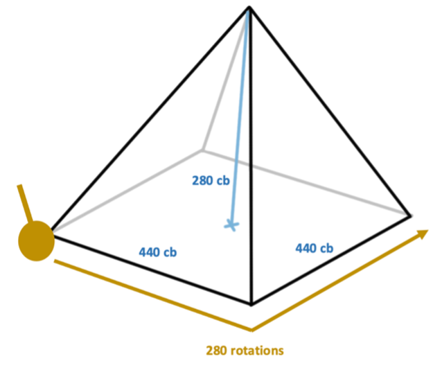

Aliens built the Pyramids of Giza. Right? Despite being built 4,500 years ago, without much of the technologies and knowledge we have access to now, the Pyramids of Giza still stand strong as the oldest and last remaining wonder of the ancient world. That’s a bit suspicious but not the worst of it. How is it that the Pyramids are all aligned to true north? Is it not weird all the Pyramids align to the constellation Orion?
Some of the weirder questions lie in the geometry of the Pyramids. When looking at the dimensions, we find various mathematical constants and irrational numbers (numbers that cannot be written as the ratio of two integers) being thrown out such as pi, defined as the ratio of a circle’s circumference to its diameter. Why is this interesting? The first written evidence of irrational numbers was in 5 B.C., more than 2000 years after the Pyramids were built. An accurate approximation to Pi would have been discovered much later.
However, it really isn’t as mysterious as we think. Take the biggest one, the Great Pyramid aka the Pyramid of Khufu. Using the Egyptian unit of measure, the royal cubit (cb), the four sides of the base make a square with lengths of approximately 440cb and the height of the pyramid is approximately 280cb. The ratio of the side lengths to the height is 1.571, when doubled gives 3.1429. This is very close to the value of pi we know, approximately 3.14159. A similar accuracy of pi would not be found till Archimedes in 3 B.C., almost 22 centuries later.
The answer is almost too simple. A probable theory is that they used a trundle wheel to measure when constructing the pyramid. Having the diameter of the trundle wheel be a royal cubit, for simplicity. Counting 280 rotations along two edges of the pyramid base and then piling the stones to get a 280 cubit height. Since the circumference of the trundle wheel would equal (1 cubit x pi), it’s natural to get an answer for pi in the ratio taken above. The use of the trundle also allowed for precise measurements in the construction of the pyramids. It’s possible the Egyptians didn’t realise this relation, therefore did not document it.
Other irrational numbers, such as the Golden Ratio, also appear in the geometry of the Pyramid to a surprisingly accurate degree. The golden ratio is the ratio between two numbers, a and b, with the property that the ratio of a + b to a is the same ratio. It is famous for being commonly found in nature in the form of the spiral shown in the diagram. However, it is odd how accurately it is portrayed in the Pyramid, and it isn’t well understood how this is the case. It’s possible the most aesthetically pleasing ratio was used after a lot of trial and error with previous pyramids.
It’s important to remember that the origins of modern mathematics were to explain phenomena in the natural world. So, is it surprising that ideas discovered recently have appeared throughout our past? Whether by mistake or from our ancestor’s reliance on the natural world. It’s possible stars from Big Dipper and Little Dipper were used to find true North. The Egyptians were very into their astronomy and designed the layout of the pyramids to correspond to the stars. And maybe the Pyramids weren’t built by aliens.